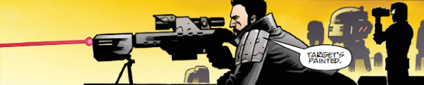

A younger Dredd clone that resigned from the Justice Department while still at the Academy of Law, had a face change and joined the Space Corps. He has worked with both Rico and Dredd during various crises, and maintains close contact with Vienna.
Art by Colin MacNeil & Len O'Grady
| Story Title | Parts | Pages | w indicates a wraparound coverCovers | Year(s) | Issues | Writer | Artist | Colourist | Letterer |
|---|---|---|---|---|---|---|---|---|---|
From Judge DreddBrothers of the Blood | 4 | 24 | 1380: Carlos Ezquerra 1 | 2004 | 1378-1381 | John Wagner | Carlos Ezquerra | <-- | Tom Frame |
From Judge DreddClass of '79 | 1 | 12 | 0 | 2005 | p2006 | John Wagner | Greg Staples | Peter Doherty | Tom Frame |
From Judge DreddNight School | 1 | 10 | Peter Doherty 1 | 2007 | M260 | John Wagner | Peter Doherty | <-- | Peter Doherty |
From Judge DreddDebris | 5 | 30 | 1794: Lee Garbett 1 | 2012 | 1792-1796 | Michael Carroll | PJ Holden | Chris Blythe | Annie Parkhouse |
From Judge DreddPayback | 2 | 12 | 0 | 2012 | 1801-1802 | Michael Carroll | PJ Holden | Chris Blythe | Annie Parkhouse |
From Judge DreddThe Forsaken | 6 | 36 | 1831: Ben Willsher 1 | 2013 | 1830-1835 | Michael Carroll | PJ Holden | Chris Blythe | Annie Parkhouse |
From Judge Dredd Featuring the Lawlords (M3.76‑M3.79).Cascade | 6 | 36 | 1897: Alex Ronald 1899: Paul Marshall & Chris Blythe 2 | 2014 | 1894-1899 | Michael Carroll | Paul Marshall | Gary Caldwell | Annie Parkhouse |
From Judge Dredd Part of the Every Empire Falls arc. Preceded by The Lion's Den in the prog.Reclamation | 5 | 30 | 1986: Tom Foster 1990: Jake Lynch 2 | 2016 | 1986-1990 | Michael Carroll | Colin MacNeil | Len O'Grady | Annie Parkhouse |
From Judge Dredd Features a cameo from Barney and also float parade balloons of: ‑ Dave the Orangutan ‑ Judge Fish ‑ Giant of the Harlem Heroes ‑ Fergee ‑ Otto Sump Boxing Day | 1 | 12 | 0 | 2016 | 2011 | Rob Williams | Chris Weston | <-- | Annie Parkhouse |
| year | episodes | pages |
| 2000 | 0 | 0 |
| 2001 | 0 | 0 |
| 2002 | 0 | 0 |
| 2003 | 0 | 0 |
| 2004 | 4 | 24 |
| 2005 | 1 | 12 |
| 2006 | 0 | 0 |
| 2007 | 1 | 10 |
| 2008 | 0 | 0 |
| 2009 | 0 | 0 |
| 2010 | 0 | 0 |
| 2011 | 0 | 0 |
| 2012 | 7 | 42 |
| 2013 | 6 | 36 |
| 2014 | 6 | 36 |
| 2015 | 0 | 0 |
| 2016 | 6 | 42 |
| 2017 | 0 | 0 |
| 2018 | 0 | 0 |
| 2019 | 0 | 0 |
| 2020 | 0 | 0 |